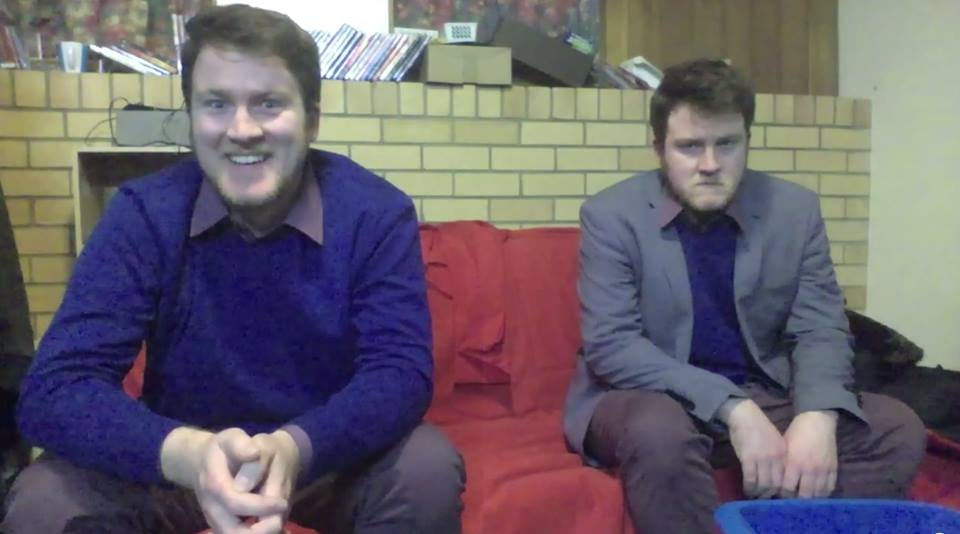

Hello I am Lachlan
Hi, I am Lachlan. I make videos, music, and silly things sometimes.
Below you will find a collection of things I have done, such as my most recent Youtube video, and a playlist of the songs I have put on Soundcloud.
Please take a look around. Pull up a chair, etc.